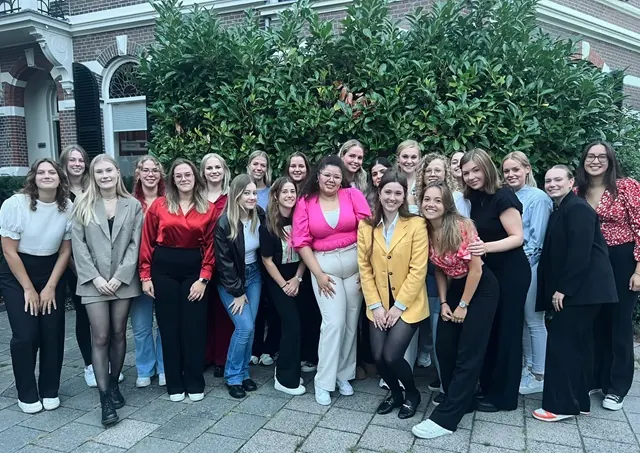

Nieuws ·
Stichting Vrouwenrechtswinkel Nijmegen - Gratis juridisch advies voor vrouwen, door vrouwen

Stichting Vrouwenrechtswinkel Nijmegen
Stichting Vrouwenrechtswinkel Nijmegen is een laagdrempelige organisatie die zich vrijwillig inzet om vrouwen uit Nijmegen en omstreken te voorzien van gratis juridisch advies. Vrouwen kunnen bij ons terecht met zeer uiteenlopende vraagstukken. Zo behandelen wij vragen over de gang van zaken bij een echtscheiding en vragen over alimentatie, maar kunnen wij u ook helpen bij een conflict op de werkvloer of problemen die zich voordoen bij het huren van een woning. Ook als u vragen heeft over hoe een juridische procedure eruitziet, kunt u bij ons terecht. Bovendien kunnen wij u helpen met het opstellen van een (klacht)brief.
Veel vrouwen die bij ons langskomen, leggen hun situatie het liefst voor aan een andere vrouw, vooral als het gaat om gevoelige informatie. Daarmee onderscheiden wij ons van andere rechtswinkels in Nijmegen en weten wij de drempel voor veel vrouwen te verlagen. Geen enkel geval is hetzelfde. Daarom is het belangrijk om uw situatie voor te leggen aan onze medewerksters, zodat wij een advies op maat kunnen opstellen. Onze medewerksters nemen dan ook de tijd om écht naar uw verhaal en situatie te luisteren.
Wie is De Vrouwenrechtswinkel Nijmegen?
De Vrouwenrechtswinkel Nijmegen wordt gerund door enthousiaste en gemotiveerde vrouwelijke rechtenstudenten. De studentes zetten zich vrijwillig in om vrouwen uit Nijmegen en omstreken te voorzien van gratis juridisch advies over allerlei juridische kwesties. Op deze manier kunnen de studentes hun kennis in de praktijk brengen en iets betekenen voor andere vrouwen. Al sinds 1986 adviseren wij vrouwen over hun rechtspositie en dat is erg waardevol. Regelmatig ontvangen wij positieve berichten van vrouwen die bij ons langs zijn gekomen op het spreekuur.
Gratis juridisch advies inwinnen?
Mocht u advies willen inwinnen, dan ontvangen we u graag op een van onze spreekuren. U kunt een afspraak maken via onze website, maar ook zonder afspraak bent u van harte welkom. Bent u niet in de gelegenheid om langs te komen? U kunt uw situatie ook telefonisch of via de mail aan ons voorleggen.
Nadat u uw situatie aan ons hebt voorgelegd, gaan we aan de slag met het schrijven van een advies op maat. Na uiterlijk tien dagen ontvangt u van ons vrijblijvend en gratis het advies in uw mail. Wij als rechtenstudentes willen met alle liefde een bijdrage leveren aan de maatschappij en vrouwen helpen die het nodig hebben.
Onze spreekuren zijn op de volgende momenten:
Maandag 09:30u – 11:00u
Dinsdag 19:00u – 20:30u
Donderdag 19:00u – 20:30u
Website: www.vrouwenrechtswinkelnijmegen.nl
E-mail: vrouwenrechtswinkelnijmegen@gmail.com
Telefoonnummer: 024-3240855 (alleen bereikbaar tijdens spreekuren)
Adres: Pontanusstraat 20, 6524 HG Nijmegen